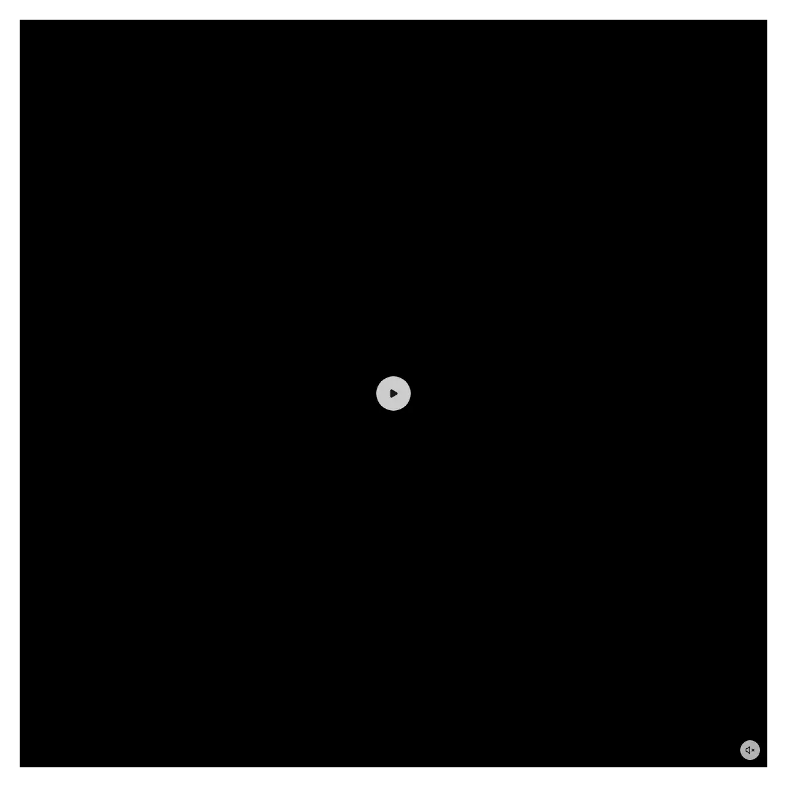

Rendered on the shadcn default neutral palette with harness-generated props.
pnpm dlx shadcn@4.21.0 add @ilinxa/media-carousel
| licence | ASSET |
|---|---|
| primitive base | none |
| type | registry:block |
| files | src/components/media-carousel/hooks/use-embla-with-state.tssrc/components/media-carousel/index.tssrc/components/media-carousel/media-carousel.tsxsrc/components/media-carousel/parts/carousel-track.tsxsrc/components/media-carousel/parts/indicator-dots.tsxsrc/components/media-carousel/parts/nav-buttons.tsxsrc/components/media-carousel/parts/single-item.tsxsrc/components/media-carousel/parts/slide-renderer.tsxsrc/components/media-carousel/types.ts |
| npm deps pulled | embla-carousel |
| registry deps | @ilinxa/video-player button |
| semantic / palette / hex | 8 / 0 / 0 |
| writes shared ui/ | no |